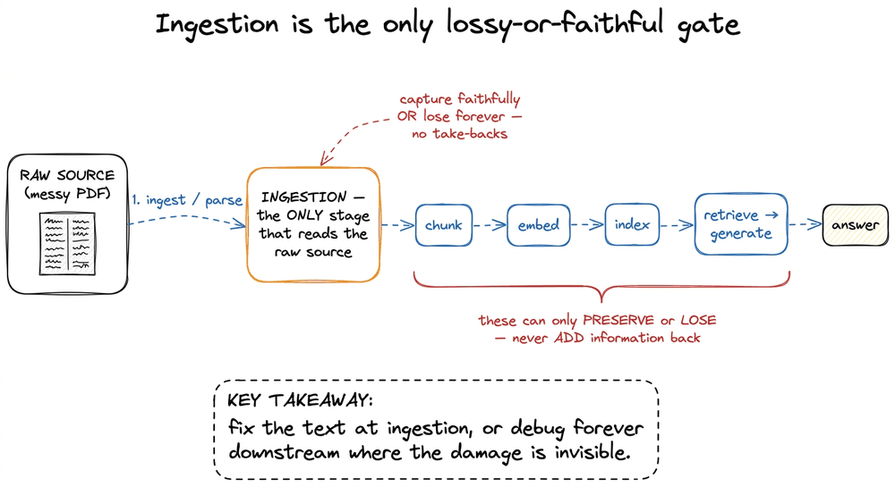
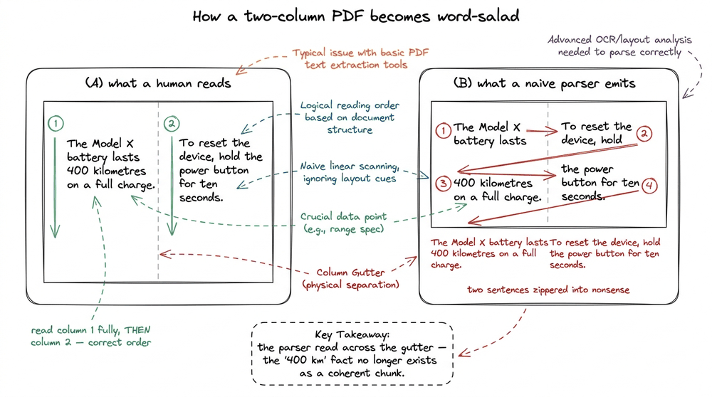
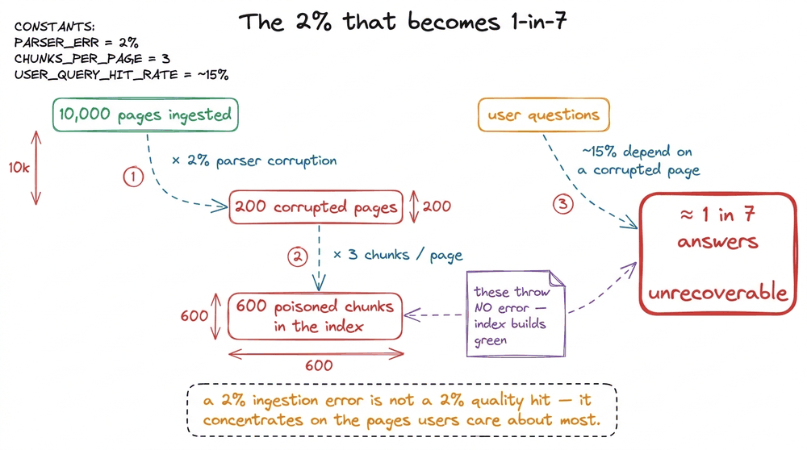
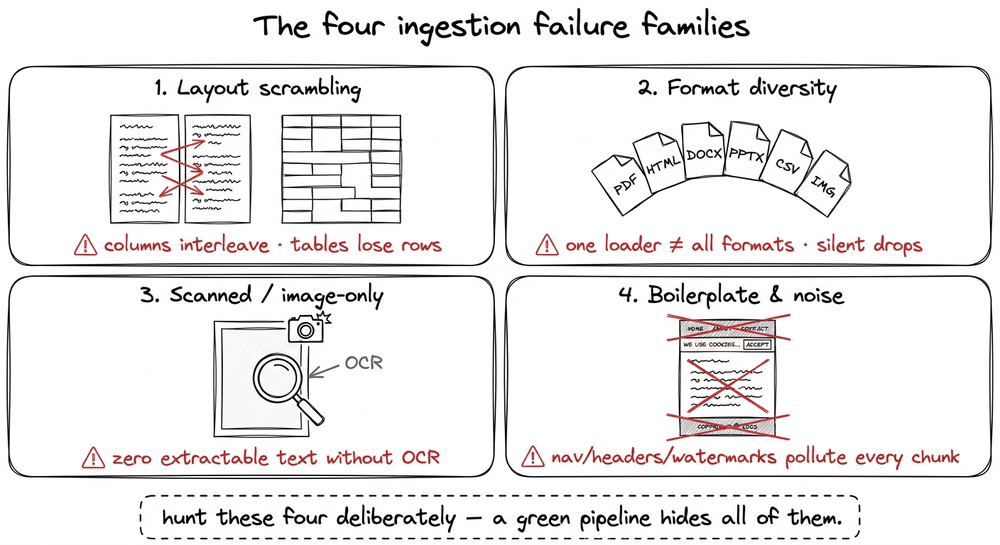
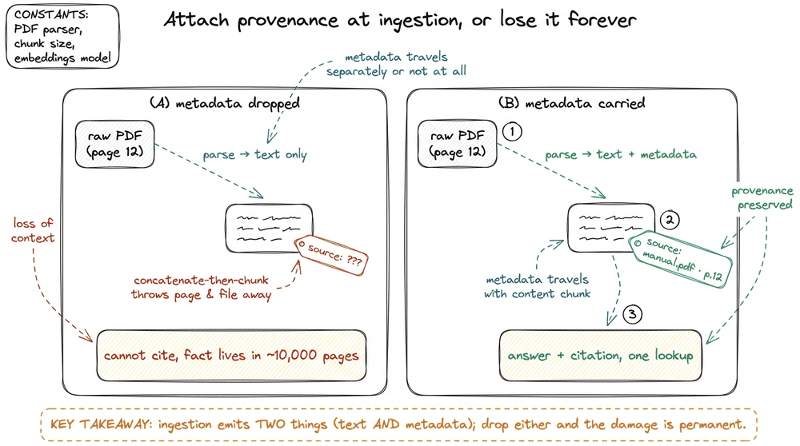

Ingestion Is the Hard Part
📝 22 annotationsIngestion Is the Hard Part
In the last chapter we chose our tool: RAG over fine-tuning over long context, because we want fresh, private, citable facts fed in at query time. That decision made, the fantasy sets in — the fantasy that the interesting work is the clever prompt, the exotic re-ranker, the vector database with the coolest logo. Let me spoil the ending of this whole section right now: none of that will save you if the text going into your index is garbage. The single most reliable predictor of whether a production RAG system works is not the model and not the prompt. It is whether ingestion — the unglamorous act of turning a real PDF into clean, correctly-ordered text — was done well.
I have watched a team spend three weeks tuning retrieval on a corpus of engineering manuals, only to discover the manuals had been parsed column-first, so every sentence was interleaved word-salad. No embedding model can rescue meaning that was destroyed before it ever became a vector. So let me build the intuition for why this stage dominates, with a concrete example small enough to hold in your head, and then state the rule I now refuse to break.
What ingestion actually is
Ingestion — also called loading or parsing — is stage one of the pipeline: take a raw source (a PDF, an HTML page, a DOCX, a scanned image) and produce two things: clean text and metadata.11 The pipeline is seven stages — ingest, chunk, embed, index, retrieve, augment, generate — and we mapped the whole thing in The RAG Pipeline End to End. Ingestion is stage one, and it runs offline, once, before any user shows up. That "once" is exactly why teams under-invest in it and pay forever. The clean text is what will be chunked, embedded, and retrieved. The metadata — source filename, page number, URL, timestamp, section heading — rides along with every chunk so that, seven stages later, the model can answer "from manual.pdf, page 12" instead of "trust me."
That sounds like plumbing. It sounds like the part you glue together in an afternoon with a library call. And for a clean corpus it is. The trouble is that production corpora are never clean. They are a document zoo: a thousand PDFs where three hundred are scanned images of faxes, two-column academic layouts, spreadsheets exported to PDF, slide decks, HTML pages buried in navigation chrome, and the one .docx your legal team swears is "basically final." Ingestion is the stage that has to survive that zoo, and survival is harder than it looks.
The rule that governs everything downstream: garbage in, garbage out
Here is the thesis, and it is worth stating as bluntly as possible: every later stage of RAG can only preserve or lose information — none of them can add it back. Chunking splits your text; it cannot un-scramble a sentence. Embedding encodes your text into a vector; if the text is "lasts charge full a on 400 battery", the vector faithfully encodes nonsense, because the embedding model has no idea a parser reordered the words. Retrieval finds the nearest vectors; it cannot know they point at rubble. The LLM generates from what it is handed; hand it garbage and it will fluently, confidently hallucinate around it.
Ingestion is the only stage that touches the raw source. It is the one and only place where information is either captured faithfully or lost forever. Everything after it is downstream of a decision that was already made.

figure rendering · Ingestion is the single point where raw text is captured faithfully orNotice why this is so insidious in practice. A parsing bug does not throw an error. There is no stack trace for "the columns interleaved." The pipeline runs green, the index builds, retrieval returns something, the model answers fluently — and the answer is subtly, confidently wrong. The damage happened at stage one and is invisible everywhere it shows up. That is why I now treat ingestion as the highest-leverage stage in the entire system.
A concrete example: two columns, one disaster
Let me make it tangible with the classic failure. Imagine one page of a product manual laid out in two columns. The left column reads top to bottom:
The Model X battery lasts 400 kilometres on a full charge.
And the right column, beside it, reads:
To reset the device, hold the power button for ten seconds.
A human reads this correctly without a thought: left column fully, then right column fully. But a naive PDF text extractor does not see "columns." It sees a page as a stream of positioned text fragments, and many extractors emit them roughly in the order they were written to the file — which, for a two-column layout, is often left-fragment, right-fragment, left-fragment, right-fragment, reading straight across the visual gutter. The extracted text comes out as:
The Model X battery lasts To reset the device, hold 400 kilometres on a full the power button for ten charge. seconds.
Read that aloud. Two perfectly good sentences have been zippered into a sentence that means nothing. And here is the part that should worry you: this text will chunk fine, embed fine, index fine, and retrieve fine. Nothing errors. A user asks "how far can the Model X go?" and the chunk that should have answered — "battery lasts 400 kilometres on a full charge" — no longer exists as a coherent unit anywhere in your index. The number 400 is now marooned three words from "To reset the device". Retrieval may still surface this chunk on vector similarity, and the model will dutifully try to reason over word-salad, most likely by inventing a clean-sounding answer that is not grounded in anything real.22 This is the quiet link between bad ingestion and hallucination. A model instructed to "answer only from context" behaves well when the context is coherent. Feed it scrambled context and grounding becomes impossible — there is no faithful answer to extract, so the model fills the gap. The faithfulness failure looks like a generation bug; its root cause is three stages upstream.

figure rendering · A human reads each column fully in turn; a naive extractor reads straiNapkin arithmetic: what a small error rate actually costs
"Fine," you might say, "columns are a known trap, and a decent parser handles them. How bad can the residual really be?" Let me do the arithmetic, because the numbers are more brutal than intuition suggests.
Suppose you ingest a modest corpus of 10,000 pages. Suppose your parser is good — it corrupts only 2% of pages (interleaved columns it misreads, tables flattened into gibberish, headers glued onto body text, ligatures like fi dropped). Two percent sounds negligible. But 2% of 10,000 pages is 200 corrupted pages. If each page yields roughly 3 chunks, that is 600 poisoned chunks silently sitting in your index, indistinguishable from good ones until a query lands on one.
Now walk it forward to the thing you actually get judged on. Say 15% of user questions happen to depend on a fact that lives on one of those corrupted pages — because corruption is not random, it clusters on exactly the dense, high-value pages (spec tables, multi-column reference sheets) that users ask about most. That is roughly 1 in 7 questions where the correct answer was destroyed at ingestion and cannot be retrieved no matter how good your retriever is. You will see it in evaluation as a retrieval or faithfulness failure, you will spend days tuning top-k and re-rankers, and none of it will help — because the fix was three stages upstream, in a parser you assumed was fine.

figure rendering · Napkin math: a mere 2% page-parse error on a 10,000-page corpus becomeThe bold takeaway I want you to carry out of this chapter: a small ingestion error rate is never a small quality hit. Errors concentrate on the structured, information-dense pages — the tables, the multi-column specs, the very pages your users query — so a 2% corruption rate does far more than 2% of the damage. This is why ingestion, not prompting, decides whether the system works.
The four failure families you will actually hit
Across real corpora, the mess sorts into four recurring families. It helps to name them so you can hunt them deliberately.
First, layout scrambling: multi-column interleaving (the example above), tables flattened into a stream where a cell's number loses its row and header, and reading-order confusion on slides and forms. Second, format diversity: PDFs, HTML, DOCX, PPTX, CSV, Markdown, and images each need a different loader, and a pipeline that assumes everything is a well-behaved PDF quietly drops the rest. Third, scanned and image-only documents: a PDF that is really a photograph of a page has zero extractable text — you need OCR (Optical Character Recognition) to get any text at all, and OCR brings its own error rate.33 A fast test worth building into your ingestion job: after parsing, measure extracted characters per page. A born-digital text page yields hundreds to thousands of characters; a scanned image yields near zero. Pages that come back nearly empty are your OCR candidates — route them to a different loader instead of silently indexing blank chunks. We build these loaders concretely in the next chapter. Fourth, boilerplate and noise: HTML nav bars, cookie banners, repeated page headers and footers, and PDF watermarks that, if not stripped, get chunked and embedded as if they were content — so every chunk looks a little bit like every other chunk and retrieval loses precision.

figure rendering · The four failure families of ingestion: layout scrambling, format diveThe quiet fifth failure: dropping the metadata
There is a fifth failure that hides behind the four, because it corrupts nothing you can see: losing the metadata. Remember that ingestion is supposed to emit two things, clean text and metadata, and it is tempting to treat the second as optional. It is not. The metadata (source filename, page number, URL, section heading, timestamp) is what rides along with every chunk so that, six stages later, the generator can say "from manual.pdf, page 12" instead of "trust me." Citations are one of the three reasons we reached for RAG in the first place. If you concatenate every parsed page into one giant string and then chunk it, you have thrown that provenance away, and no clever prompt at generation time can invent it back. The text is perfect and the system still cannot cite.
Put a number on it. Say your corpus is 500 PDFs and a user asks a question whose answer lives on one page of one file. Retrieval hands the generator a chunk of clean text, and the user, quite reasonably, asks "where did that come from?" If you attached the (filename, page) pair at ingestion, the answer is one lookup. If you dropped it, the honest answer is that the fact could be on any of roughly 500 files times an average of, say, 20 pages each, so about 10,000 pages, and you cannot point at one. The information was captured faithfully and made unusable in the same breath, which is exactly the ingestion failure mode this chapter is about, just applied to the metadata half instead of the text half.

figure rendering · Ingestion must emit clean text and metadata together. Concatenating paWe build these metadata tags concretely, and the cleaning that goes with them, in Cleaning, Normalizing, and Metadata. For now the point is only that the metadata is not optional plumbing, it is half of what ingestion exists to produce.
The minimal defensive move: never trust the parse blindly
You do not fix ingestion with a bigger model. You fix it by inspecting the output of the parser before you trust it — treating the extracted text as suspect until proven clean. The cheapest, highest-value habit is a sanity check that runs on every ingested page. Here is the smallest version that has caught real bugs for me:
def sanity_check_page(text: str, page_num: int) -> list[str]:
"""Flag pages whose extracted text looks corrupt, before indexing."""
warnings = []
n_chars = len(text.strip())
# Near-empty page → almost certainly a scanned image needing OCR.
if n_chars < 50:
warnings.append(f"page {page_num}: {n_chars} chars — likely scanned image, route to OCR")
# Very high non-alphanumeric ratio → flattened table or decode garbage.
if n_chars > 0:
symbols = sum(1 for c in text if not (c.isalnum() or c.isspace()))
if symbols / n_chars > 0.30:
warnings.append(f"page {page_num}: {symbols/n_chars:.0%} symbols — possible table/decode garbage")
# Broken words per line hint at column interleaving (very short 'words').
tokens = text.split()
if tokens:
tiny = sum(1 for t in tokens if len(t) <= 2)
if tiny / len(tokens) > 0.40:
warnings.append(f"page {page_num}: {tiny/len(tokens):.0%} tiny tokens — possible column scramble")
return warningsThis is not clever. It is three cheap heuristics — character count, symbol ratio, tiny-token ratio — run over the parser's output. But it converts silent corruption into a loud warning you can act on: route near-empty pages to OCR, re-parse symbol-heavy pages with a table-aware loader, and eyeball the column-scramble flags. The point is the posture, not the specific thresholds: assume the parser lied, and prove it did not.44 In practice you tune these thresholds to your corpus by hand-labelling a few dozen pages as clean/corrupt and picking cutoffs that separate them. The exact numbers here are illustrative, not universal — a corpus full of code or chemical formulae will legitimately trip the symbol-ratio check, so calibrate before you trust it.
So the key is: fix the text first
Let me land the plane. RAG is a pipeline, and a pipeline is only as good as its most upstream loss. Ingestion is that upstream stage — the single place where the raw source is read, and therefore the single place where meaning is captured faithfully or destroyed silently. No re-ranker, no query rewrite, no larger context window can reconstruct a fact that a parser zippered into nonsense at stage one. The clever prompt gets the glory; the boring loader decides the outcome.
So the discipline is simple to state and hard to practise: spend your first units of effort on the text, not the prompt. Get faithful text and correct reading order out of your messy sources, attach the metadata retrieval will later filter on, and inspect the parser's output before you ever embed it. Do that, and every downstream chapter in this book has something real to work with. Skip it, and you will tune retrieval for weeks against a corpus that was broken before it began.
In the next chapter we get our hands dirty and actually build the loaders — Loading Documents: PDF, HTML, and Beyond — parsing each format in the zoo, handling two columns correctly, and reaching for OCR when the page is really a photograph.